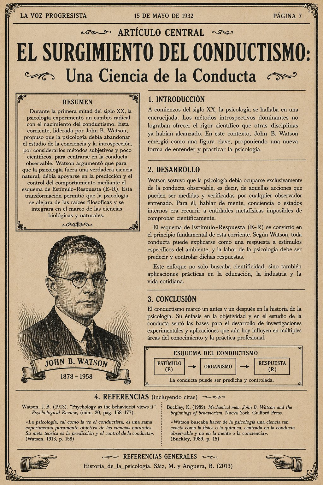
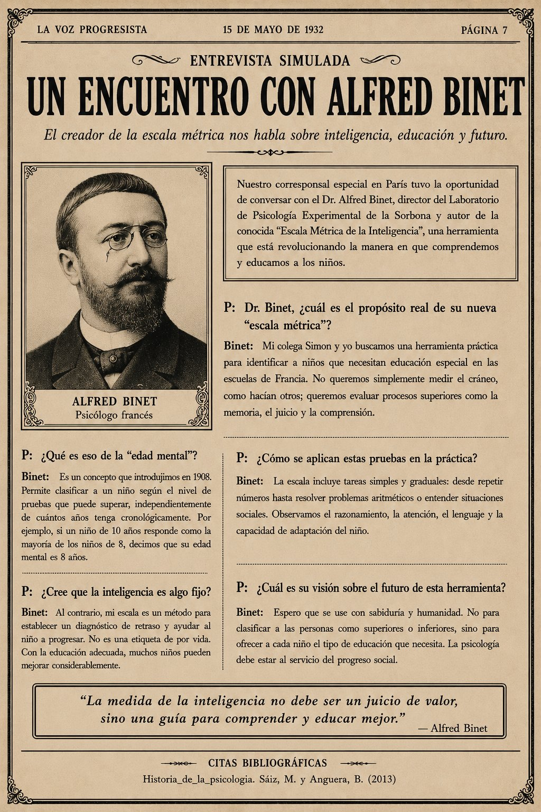
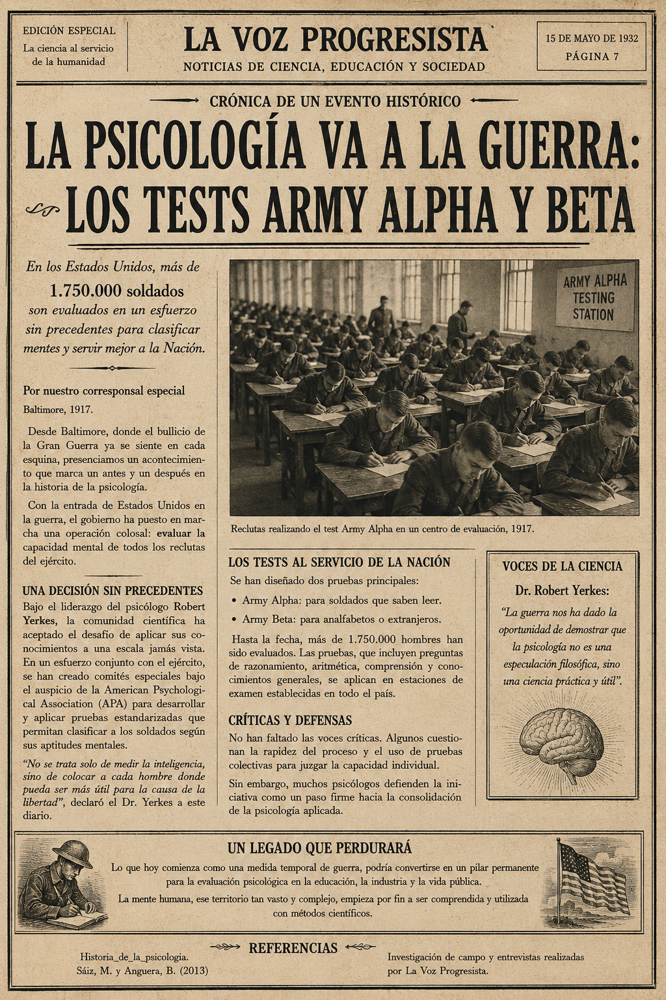
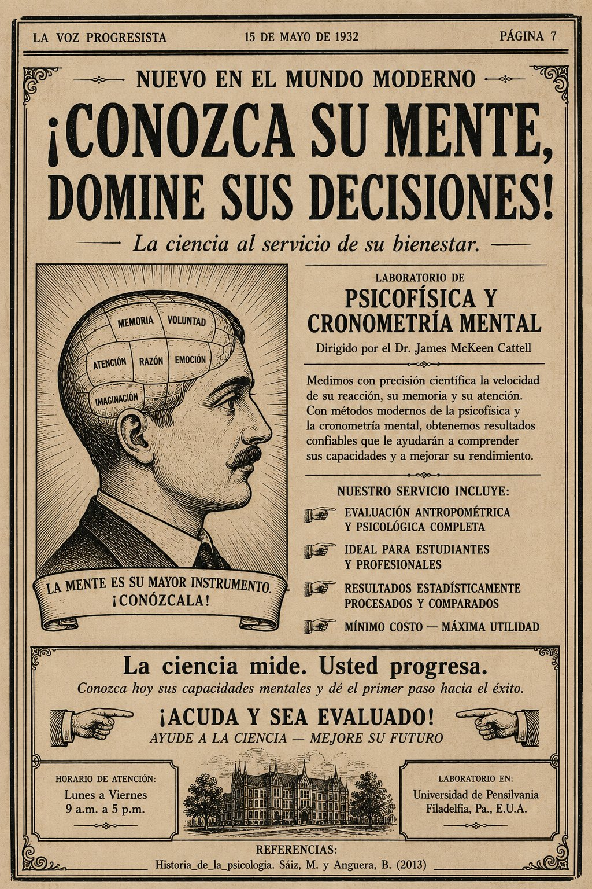

Portada
Artículo Central
Entrevista
Crónica
Publicidad
Universidad Nacional Abierta y a Distancia — UNAD
Edición Académica · 2026
Antecedentes de la Psicología · Cód. 402537616
Publicación Colaborativa Estudiantil
Revista Digital
del Siglo XX
Psicología en Transformación
❧ ✦ ❧
✦ Edición Especial · Años 1900–1950 · Primera Mitad del Siglo XX ✦
1900
🧠
El siglo que transformó
la comprensión del ser humano
En esta edición
Artículo central:
El surgimiento del conductismo: Una ciencia de la conducta
Entrevista simulada:
Un encuentro con Alfred Binet — inteligencia, educación y futuro
Crónica histórica:
La psicología va a la guerra: los Tests Army Alpha y Beta (1917)
Publicidad de época:
¡Conozca su mente, domine sus decisiones! — Laboratorio de Psicofísica
✦ Equipo Editorial ✦
01
Ana Carolina Bedoya Cardona
02
Paula Lizeth Ortiz Guerrero
03
Alejandro Zapata Palacio
04
Maria Jose Quintero Morales
Curso: Antecedentes de la Psicología
Grupo: 402537616_67
UNAD · Colombia · 2026
La Voz Progresista · 15 de Mayo de 1932
§ I — Artículo Central
Página 2
§ I · Artículo Central

El surgimiento del conductismo: Una ciencia de la conducta · La Voz Progresista, 15 de mayo de 1932, p. 7
La Voz Progresista · 15 de Mayo de 1932
§ II — Entrevista Simulada
Página 3
§ II · Entrevista Simulada

Un encuentro con Alfred Binet · El creador de la escala métrica nos habla sobre inteligencia, educación y futuro · La Voz Progresista, 1932
La Voz Progresista · 15 de Mayo de 1932
§ III — Crónica Histórica
Página 4
§ III · Crónica de un Evento Histórico

La psicología va a la guerra: Los Tests Army Alpha y Beta · Baltimore, 1917 · La Voz Progresista, 1932
La Voz Progresista · 15 de Mayo de 1932
§ IV — Publicidad de Época
Página 5
§ IV · Publicidad Simulada de la Época

¡Conozca su mente, domine sus decisiones! · Laboratorio de Psicofísica y Cronometría Mental · Universidad de Pensilvania, 1932